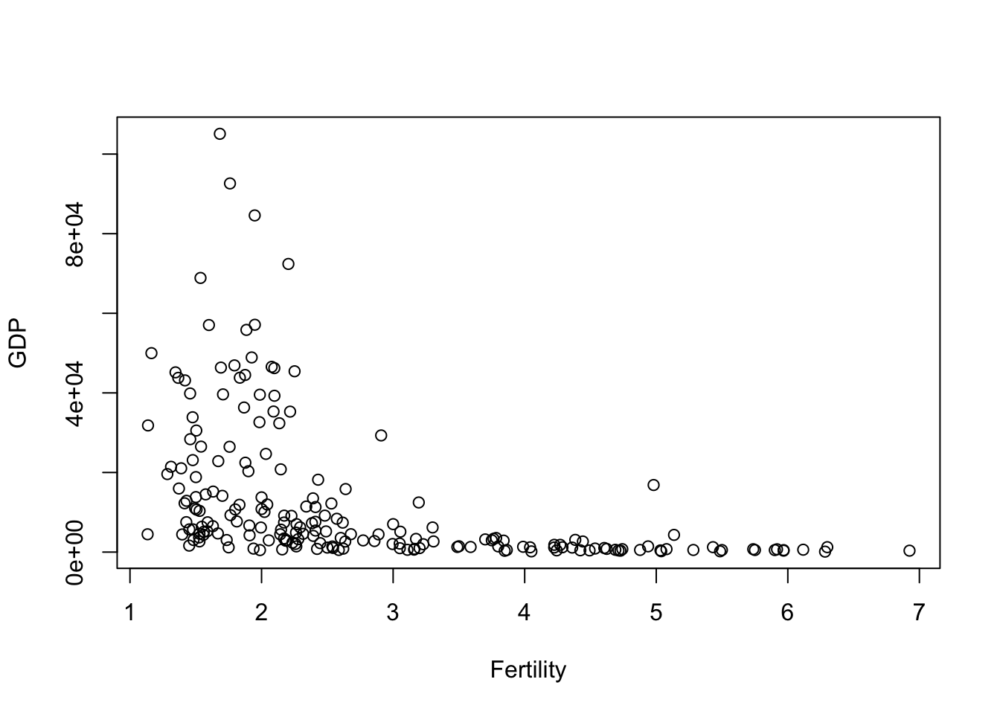
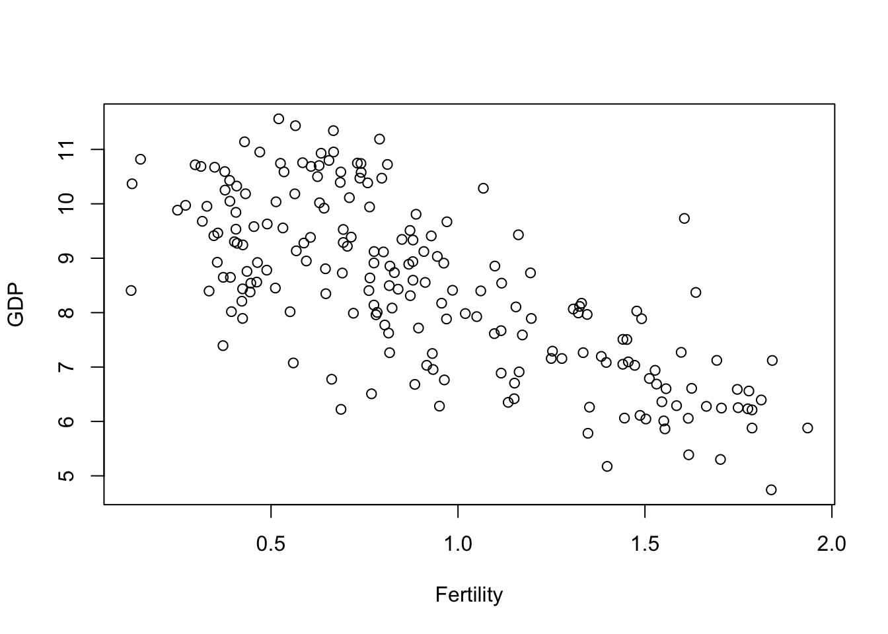
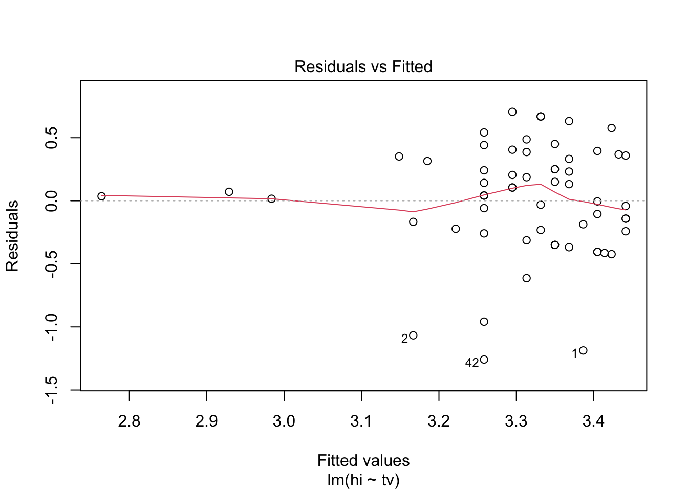
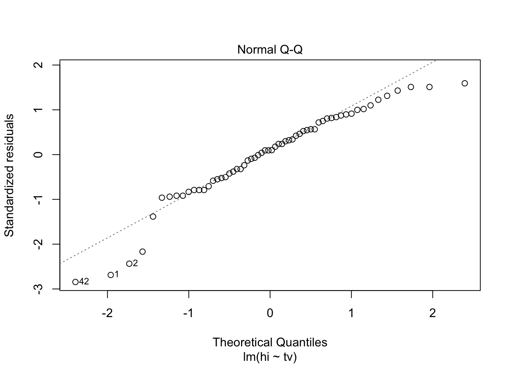
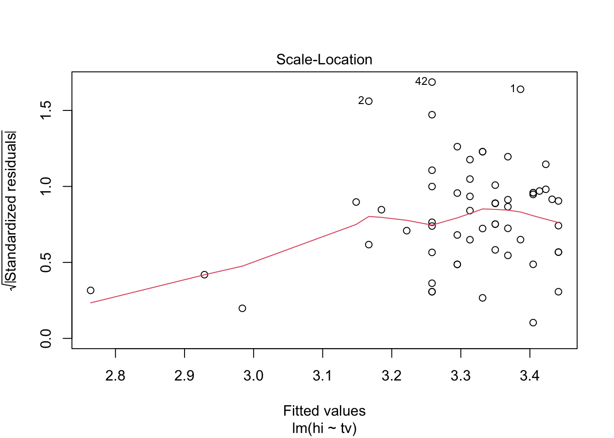
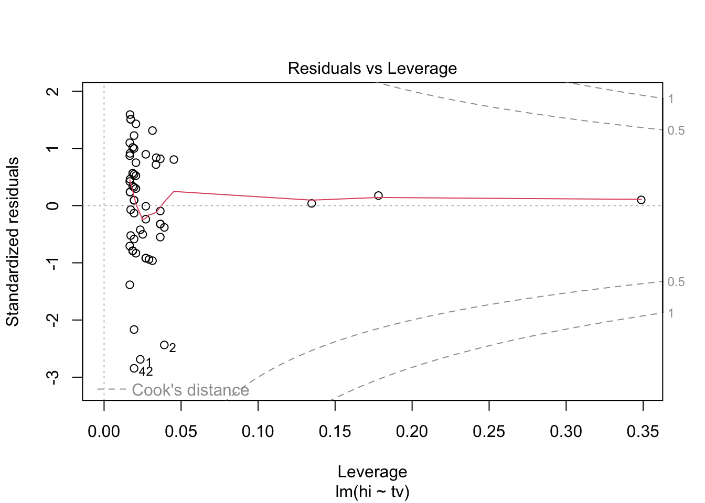

region group fertility ppgdp
Africa :53 oecd : 31 Min. :1.134 Min. : 114.8
Asia :50 other :115 1st Qu.:1.754 1st Qu.: 1283.0
Europe :39 africa: 53 Median :2.262 Median : 4684.5
Latin Amer:20 Mean :2.761 Mean : 13012.0
Caribbean :17 3rd Qu.:3.545 3rd Qu.: 15520.5
Oceania :17 Max. :6.925 Max. :105095.4
(Other) : 3
lifeExpF pctUrban
Min. :48.11 Min. : 11.00
1st Qu.:65.66 1st Qu.: 39.00
Median :75.89 Median : 59.00
Mean :72.29 Mean : 57.93
3rd Qu.:79.58 3rd Qu.: 75.00
Max. :87.12 Max. :100.00
Code
head(UN11)
region group fertility ppgdp lifeExpF pctUrban
Afghanistan Asia other 5.968 499.0 49.49 23
Albania Europe other 1.525 3677.2 80.40 53
Algeria Africa africa 2.142 4473.0 75.00 67
Angola Africa africa 5.135 4321.9 53.17 59
Anguilla Caribbean other 2.000 13750.1 81.10 100
Argentina Latin Amer other 2.172 9162.1 79.89 93
A
fertility: Predictor
ppgdp: Response
B
Code
plot(x = UN11$fertility, y = UN11$ppgdp,xlab ="Fertility",ylab ="GDP")

Based on this graph, a straight-line mean function does not seem to be plausible for a summary of this graph, due to the fact that the points are clustered in one area.
C
Code
plot(x =log(UN11$fertility), y =log(UN11$ppgdp),xlab ="Fertility",ylab ="GDP")

On the other hand, it’s plausible to make a straight line mean function from the graph above. It paints a clearer picture of a trend. In other words, one can see from the graph that there is a correlation between fertility rates and GDP- richer countries tend to have fewer children per woman.
There seems to be no changes when I convert US dollars into UK pounds, and it’s no surprise since both currencies are two of the strongest in the world. The trend is still the same.
From this graph, the data seems too cluttered to make a prediction out of; in other words, there is no correlation between the past years and percipitation measures in inches.
Question 4: Rate My Professors
Code
data(Rateprof)summary(Rateprof)
gender numYears numRaters numCourses pepper
female:159 Min. : 1.000 Min. :10.00 Min. : 1.000 no :320
male :207 1st Qu.: 6.000 1st Qu.:15.00 1st Qu.: 3.000 yes: 46
Median :10.000 Median :24.00 Median : 4.000
Mean : 8.347 Mean :28.58 Mean : 4.251
3rd Qu.:11.000 3rd Qu.:37.00 3rd Qu.: 5.000
Max. :11.000 Max. :86.00 Max. :12.000
discipline dept quality helpfulness
Hum :134 English : 49 Min. :1.409 Min. :1.364
SocSci : 66 Math : 34 1st Qu.:2.936 1st Qu.:3.069
STEM :103 Biology : 20 Median :3.612 Median :3.662
Pre-prof: 63 Chemistry : 20 Mean :3.575 Mean :3.631
Psychology: 20 3rd Qu.:4.250 3rd Qu.:4.351
Spanish : 20 Max. :4.981 Max. :5.000
(Other) :203
clarity easiness raterInterest sdQuality
Min. :1.333 Min. :1.391 Min. :1.098 Min. :0.09623
1st Qu.:2.871 1st Qu.:2.548 1st Qu.:2.934 1st Qu.:0.87508
Median :3.600 Median :3.148 Median :3.305 Median :1.15037
Mean :3.525 Mean :3.135 Mean :3.310 Mean :1.05610
3rd Qu.:4.214 3rd Qu.:3.692 3rd Qu.:3.692 3rd Qu.:1.28730
Max. :5.000 Max. :4.900 Max. :4.909 Max. :1.67739
sdHelpfulness sdClarity sdEasiness sdRaterInterest
Min. :0.0000 Min. :0.0000 Min. :0.3162 Min. :0.3015
1st Qu.:0.9902 1st Qu.:0.9085 1st Qu.:0.9045 1st Qu.:1.0848
Median :1.2860 Median :1.1712 Median :1.0247 Median :1.2167
Mean :1.1719 Mean :1.0970 Mean :1.0196 Mean :1.1965
3rd Qu.:1.4365 3rd Qu.:1.3328 3rd Qu.:1.1485 3rd Qu.:1.3326
Max. :1.8091 Max. :1.8091 Max. :1.6293 Max. :1.7246
There seems to be a very clear positive correlation between clarity, helpfulness, and quality, given by the seemingly straight lines.
While the trends are not as straight, easiness has a positive correlation between variables clarity, helpfulness, and quality.
raterInterest, on the other hand, presents less of a correlation, for a lack of better words, when it’s graphed with the rest of the variables, but you can see a general pattern of positive correlation with those variables.
Question 5: Student Surveys
Code
data(student.survey)head(student.survey)
subj ge ag hi co dh dr tv sp ne ah ve pa pi re
1 1 m 32 2.2 3.5 0 5.0 3 5 0 0 FALSE r conservative most weeks
2 2 f 23 2.1 3.5 1200 0.3 15 7 5 6 FALSE d liberal occasionally
3 3 f 27 3.3 3.0 1300 1.5 0 4 3 0 FALSE d liberal most weeks
4 4 f 35 3.5 3.2 1500 8.0 5 5 6 3 FALSE i moderate occasionally
5 5 m 23 3.1 3.5 1600 10.0 6 6 3 0 FALSE i very liberal never
6 6 m 39 3.5 3.5 350 3.0 4 5 7 0 FALSE d liberal occasionally
ab aa ld
1 FALSE FALSE FALSE
2 FALSE FALSE NA
3 FALSE FALSE NA
4 FALSE FALSE FALSE
5 FALSE FALSE FALSE
6 FALSE FALSE NA
Code
help("student.survey") # to find out what those columns stand for
Code
unique(student.survey$pi)
[1] conservative liberal moderate
[4] very liberal slightly liberal slightly conservative
[7] very conservative
7 Levels: very liberal < liberal < slightly liberal < ... < very conservative
Political Ideology vs Religiosity
Code
student.survey<- student.survey%>%mutate(p_i =case_when(pi =="very liberal"~1, pi =="liberal"~2, pi =="slightly liberal"~3, pi =="moderate"~4, pi =="slightly conservative"~5, pi =="conservative"~6, pi =="very conservative"~7,TRUE~0)) student.survey<- student.survey%>%mutate(r_e =case_when(re =="never"~1, re =="occasionally"~2, re =="most weeks"~3, re =="every week"~4,TRUE~0))religion <-lm(p_i ~ r_e, data = student.survey)religion
The intercept coefficient is around 0.93, meaning that one’s political ideology starts around the “very liberal” area, and the religiosity coefficient starts around 0.97, meaning that one basically never attends religious services. In other word, this model starts of with a very liberal person who never attends church. The more religious a person is (i.e. the more often they attend religious services at places such as church or synagogue etc.), the more ideologically conservative they tend to be.
High School GPA vs Hours of Watching TV
Code
TV <-lm(hi ~ tv, data = student.survey)TV
Call:
lm(formula = hi ~ tv, data = student.survey)
Coefficients:
(Intercept) tv
3.44135 -0.01831
Code
plot(TV)




Interpretation
What we have here is the Intercept of around 3.44, which means that this is the student’s expected high school GPA when they watch 0 hours of TV. The negative coefficient of -0.01831 means that the more hours one watches TV, the lower their GPA by this amount.
Source Code
---title: "Hw 3 by Kristin Abijaoude"author: "Kristin Abijaoude"description: "HW3"date: "04/02/2023"format: html: toc: true code-fold: true code-copy: true code-tools: truecategories: - Hw3 - kristin abijaoude - un - ratemyprof - water - student survey - smss---# Question 1: Fertility vs. GDP```{r}# load packagespackages <-c("readr", "ggplot2", "caret", "summarytools", "smss", "alr4", "tidyverse", "dplyr", "stats", "pwr")lapply(packages, require, character.only =TRUE)``````{r}data(UN11)summary(UN11)head(UN11)```## A`fertility`: Predictor`ppgdp`: Response## B```{r}plot(x = UN11$fertility, y = UN11$ppgdp,xlab ="Fertility",ylab ="GDP")```Based on this graph, a straight-line mean function does not seem to be plausible for a summary of this graph, due to the fact that the points are clustered in one area.## C```{r}plot(x =log(UN11$fertility), y =log(UN11$ppgdp),xlab ="Fertility",ylab ="GDP")```On the other hand, it's plausible to make a straight line mean function from the graph above. It paints a clearer picture of a trend. In other words, one can see from the graph that there is a correlation between fertility rates and GDP- richer countries tend to have fewer children per woman.# Question 2: in UK pounds```{r}UN11_uk <- UN11 %>%select(ppgdp, fertility) %>%mutate(gdp_uk = ppgdp /1.33)plot(x =log(UN11_uk$fertility), y =log(UN11_uk$gdp_uk),xlab ="Fertility",ylab ="GDP")```There seems to be no changes when I convert US dollars into UK pounds, and it's no surprise since both currencies are two of the strongest in the world. The trend is still the same.# Question 3: Water Runoff in the Sierras```{r}data(water)head(water)``````{r}pairs(water)```From this graph, the data seems too cluttered to make a prediction out of; in other words, there is no correlation between the past years and percipitation measures in inches.# Question 4: Rate My Professors```{r}data(Rateprof)summary(Rateprof)``````{r}Rate_pairs <- Rateprof %>%select(clarity, quality, helpfulness, easiness, raterInterest)pairs(Rate_pairs)```- There seems to be a very clear positive correlation between `clarity`, `helpfulness`, and `quality`, given by the seemingly straight lines.- While the trends are not as straight, `easiness` has a positive correlation between variables `clarity`, `helpfulness`, and `quality`.- `raterInterest`, on the other hand, presents less of a correlation, for a lack of better words, when it's graphed with the rest of the variables, but you can see a general pattern of positive correlation with those variables.# Question 5: Student Surveys```{r}data(student.survey)head(student.survey)help("student.survey") # to find out what those columns stand for``````{r}unique(student.survey$pi)```## Political Ideology vs Religiosity ```{r}student.survey<- student.survey%>%mutate(p_i =case_when(pi =="very liberal"~1, pi =="liberal"~2, pi =="slightly liberal"~3, pi =="moderate"~4, pi =="slightly conservative"~5, pi =="conservative"~6, pi =="very conservative"~7,TRUE~0)) student.survey<- student.survey%>%mutate(r_e =case_when(re =="never"~1, re =="occasionally"~2, re =="most weeks"~3, re =="every week"~4,TRUE~0))religion <-lm(p_i ~ r_e, data = student.survey)religionplot(religion)```### Interpretion The intercept coefficient is around 0.93, meaning that one's political ideology starts around the "very liberal" area, and the religiosity coefficient starts around 0.97, meaning that one basically never attends religious services. In other word, this model starts of with a very liberal person who never attends church. The more religious a person is (i.e. the more often they attend religious services at places such as church or synagogue etc.), the more ideologically conservative they tend to be. ## High School GPA vs Hours of Watching TV```{r}TV <-lm(hi ~ tv, data = student.survey)TVplot(TV)```### InterpretationWhat we have here is the Intercept of around 3.44, which means that this is the student's expected high school GPA when they watch 0 hours of TV. The negative coefficient of -0.01831 means that the more hours one watches TV, the lower their GPA by this amount.